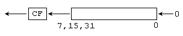
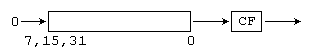

Команды SHL и SHR
Команды SHL и SHR выполняют побитовый сдвиг заданного числа влево или вправо через флаг CF. Команда SHL выполняет сдвиг влево, команда SHR - сдвиг вправо.
Команда SHL
| Синтаксис: | SHL op1,op2 |
| Операнды: | op1 - r/m8, r/m16, r/m32 op2 - i8, CL |
| Назначение: | Логический сдвиг влево |
| Процессор: | 8086+ |
| Флаги: | Флаг OF изменяется только в случае сдвига на 1 бит - он устанавливается, если
изменилось значение старшего бита, и сбрасывается, если старший бит не изменился. Для
сдвигов на несколько бит, флаг OF неопределен. Флаг CF становится равным старшему биту операнда до выполнения сдвига. Флаги ZF, PF, SF устанавливаются в соответствии с результатом. Значение флага AF не определено. Если счетчик сдвига равен 0, то флаги не изменяются. |
| Комментарий: | Команда SHL выполняет побитовый сдвиг операнда влево. Старший бит операнда
помещается во флаг CF. Все биты операнда сдвигаются влево на место старших битов. В младший
бит заносится 0. Величина сдвига определяется вторым операндом  Использование в качестве второго операнда непосредственных значений больших 1 стало возможным только начиная с 80186 процессора. Начиная с 80286 процессоров у второго операнда учитываются только пять младших бит (значения от 0 до 31). Процессоры ниже 80286 учитывали все биты операнда. |
| Ограничения: | Нет |
| Примеры: |
mov cl,4 shl ax,cl jc l1 |
Команда SHR
| Синтаксис: | SHR op1,op2 |
| Операнды: | op1 - r/m8, r/m16, r/m32 op2 - i8, CL |
| Назначение: | Логический сдвиг вправо |
| Процессор: | 8086+ |
| Флаги: | Флаг OF изменяется только в случае сдвига на 1 бит - он устанавливается в
значение старшего бита операнда до выполнения сдвига. Для сдвигов на несколько бит, флаг OF
неопределен. Флаг CF становится равным младшему биту операнда до выполнения сдвига. Флаги ZF, PF, SF устанавливаются в соответствии с результатом. Значение флага AF не определено. Если счетчик сдвига равен 0, то флаги не изменяются. |
| Комментарий: | Команда SHR выполняет побитовый сдвиг операнда вправо. Младший бит операнда
помещается во флаг CF. Все биты операнда сдвигаются вправо на место младших битов. В старший
бит заносится 0. Величина сдвига определяется вторым операндом  Использование в качестве второго операнда непосредственных значений больших 1 стало возможным только начиная с 80186 процессора. Начиная с 80286 процессоров у второго операнда учитываются только пять младших бит (значения от 0 до 31). Процессоры ниже 80286 учитывали все биты операнда. |
| Ограничения: | Нет |
| Примеры: |
mov cl,4 shr ax,cl jc l1 |